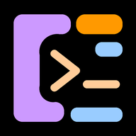

No route to the fleet
Link severed · 0 panes attached
This is not a cached copy of the cockpit. The cockpit is a live window onto tmux sessions running on a machine on your tailnet — with no route to that machine there are no panes to show, and a screen that pretended otherwise would be worse than this one.
Your agent sessions are unaffected. They run inside tmux on the host, not in this browser, so nothing was lost when the link dropped and reconnecting re-attaches to exactly the state you left.
Check, in this order
- Tailscale is connected on this iPad. Open the Tailscale app and confirm it is active — a captive-portal or hotel Wi-Fi will hold the connection down.
- The host is awake. A sleeping Mac drops off the tailnet entirely; nothing on this device can wake it.
- LCARS is running on the host, on this team's port, and Tailscale Serve is fronting it with TLS.
- The address is
https://. The terminal panes do not survive plainhttp://on iPadOS — see below.